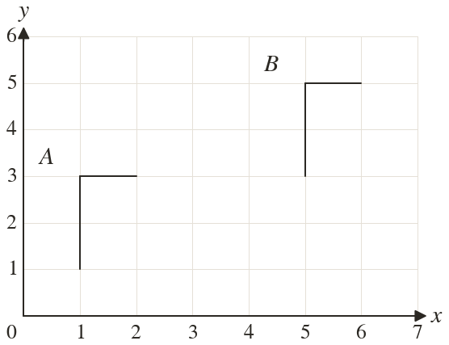
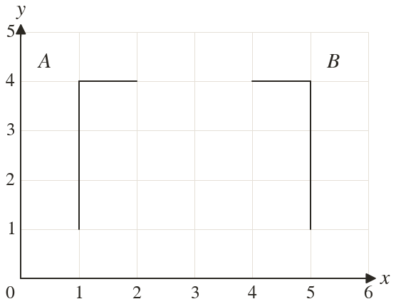
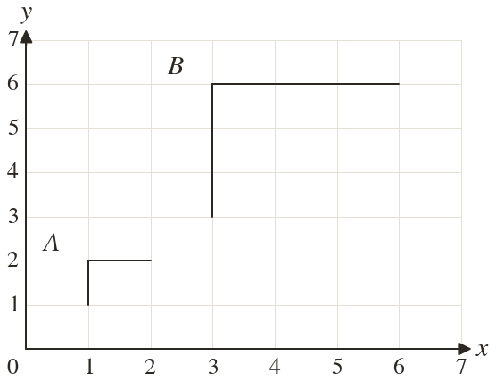

Westonbirt Maths · Transformations and Enlargements
Describing Transformations
Name: ______________________ Date: ____________
1
Describe fully the single transformation that maps A onto B.
2
Describe fully the single transformation that maps A onto B.
3
Describe fully the single transformation that maps A onto B.
4
About the point maps to and maps to Describe the transformation fully.
5
Is 'a rotation of about 1)' a complete description? Explain.
Ext
The point maps to Give two different single transformations that could do this.


